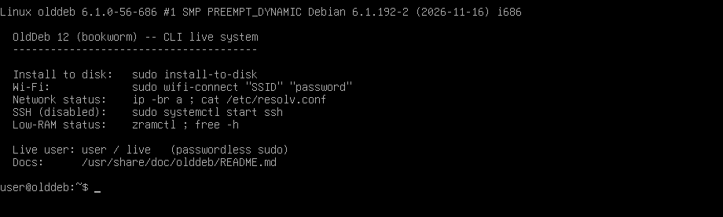

A tiny Linux for computers that still have a job to do.
OldDeb is a command-line-only live system for old PCs: a BIOS-booting ISO with an installer and optional persistence, plus disk images and rootfs tarballs. No desktop, no bloat, no surprises.

Why it exists
Runs where modern distros won't
i686 minimum, 256 MB RAM to boot, plain BIOS. Two architectures: non-PAE 32-bit and 64-bit. Debian 12 is the last bootable 32-bit Debian, supported until June 2028.
Nothing but a shell
No desktop, no display manager, no browser. It boots to a login prompt and stays out of the way. Every installed package is listed in the release.
Try it, keep it, move it
Boot the ISO, log in, and run sudo install-to-disk for
a guided install. Or keep the live system on a stick with a
persistence partition.
Tuned for small machines
zram swap (50 %, zstd), earlyoom, volatile journald and relaxed vm settings. Networking through dhcpcd, Wi-Fi with one command.
Install
Write the ISO to a USB stick or CD-RW, boot it, and install:
# on any Linux machine gh release download v12 -R qqqqr250/olddeb sha256sum -c SHA256SUMS sudo dd if=olddeb-12-i386-cli.iso of=/dev/sdX bs=4M status=progress conv=fsync # then boot the stick: user / live sudo install-to-disk
The installer asks for the target disk, hostname, user and password, and installs GRUB. Everything on the target disk is erased.
Or write a disk image directly
zstd -d olddeb-12-i386.img.zst -o olddeb.img
sudo dd if=olddeb.img of=/dev/sdX bs=4M status=progress conv=fsync
Disk-image login: user / live;
sudo asks for the password, no autologin. The image grows to
fill the card if you resize the partition.
persistence on the stick with / union in
persistence.conf. The default command line already contains
persistence, so changes survive reboots.
.dat persistence is
casper-only; use the ext4 partition above instead.
Downloads
| File | Size | What it is |
|---|---|---|
| olddeb-12-i386-cli.iso | 506 MB | live ISO + installer, 32-bit |
| olddeb-12-amd64-cli.iso | 540 MB | live ISO + installer, 64-bit |
| olddeb-12-i386.img.zst | 410 MB | raw MBR/ext4 disk image with GRUB |
| olddeb-12-amd64.img.zst | 428 MB | raw MBR/ext4 disk image with GRUB |
| olddeb-12-i386-rootfs.tar.zst | 414 MB | root filesystem tarball |
| olddeb-12-amd64-rootfs.tar.zst | 430 MB | root filesystem tarball |
| SHA256SUMS | — | checksums for everything above |
Build it yourself
Requires a Debian or Ubuntu host with live-build. The scripts install what they need and build outside the source tree:
git clone https://github.com/qqqqr250/olddeb cd olddeb sudo ./scripts/build.sh i386 # or amd64 sudo ./scripts/make-disk-image.sh i386 sudo ./scripts/make-rootfs.sh i386
Artifacts land in out/. The build is
reproducible from a clean Debian 12 host; a full i386 build takes about
20 minutes on four cores.
Verified in QEMU
| Test | Result |
|---|---|
| i386 ISO, 256 MB RAM | login, DHCP/DNS, zram, earlyoom, sudo |
| amd64 ISO, 512 MB RAM | login, DHCP/DNS, zram, earlyoom, sudo |
| raw images | GRUB boots from disk, root on UUID |
| persistence | file survived a reboot (2 layouts) |
| Ventoy 1.1.18, BIOS | detected and booted in normal mode |